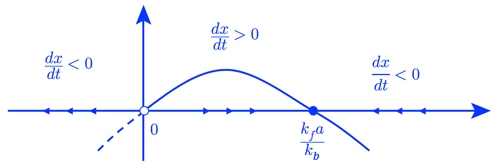
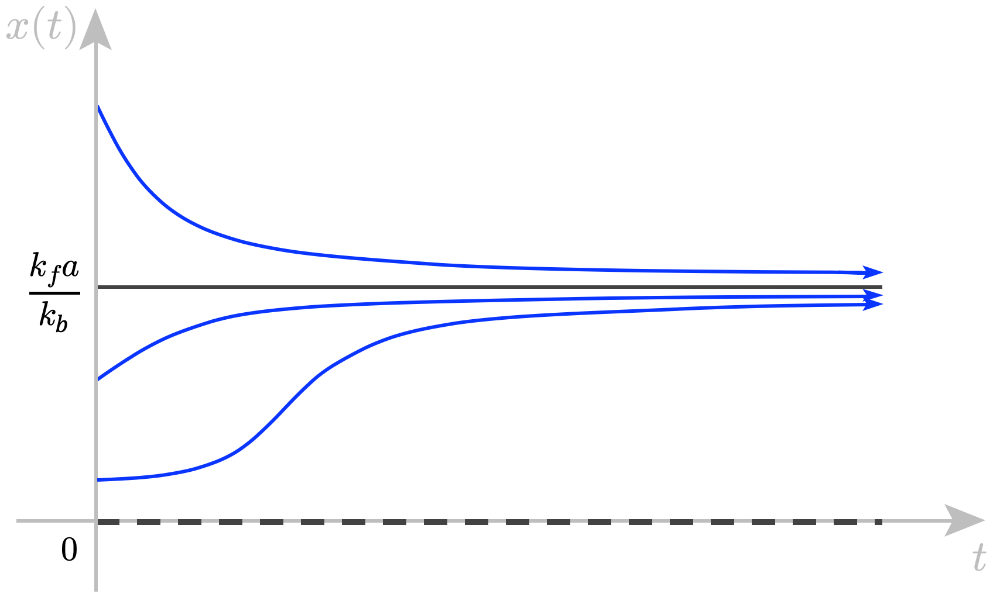

Discussion 1 (Spring 2020)2020-03-01
Problem 1 (Model for an autocatalytic reaction – from Strogatz)A chemical species \(A\) combines with a species \(X\) to form two molecules of \(X\). This means that the chemical \(X\) is involved in its own production, a process that chemists call autocatalysis . However, the reaction is reversible: two molecules of \(X\) can also combine and disassociate back into \(X\) and \(A\). We represent this reaction by the chemical equation: Here, \(k_f\) and \(k_b\) are the rate constants for the forward reaction and for the backward reaction, respectively. Assume that there is a very large surplus of the chemical \(A\), so that we can treat the concentration of \(A\) as a constant: \([A]=a\). (a) Use the mass-action laws to write down a differential equation for \(x(t)\), the concentration of \(X\) in the reaction. Solution. \[ \begin{aligned} \text{rate of change of [X]} &= \left(\begin{array}{c} \text{rate at which X is produced}\\ \text{ by } A+X \rightarrow 2X \end{array}\right) - \left(\begin{array}{c} \text{rate at which X is consumed}\\ \text{ by } 2X \rightarrow A+X \end{array}\right) \\ &\implies \quad \dfrac{dx}{dt} = k_f ax - k_b x^2 \end{aligned} \] (b) Find the fixed points and evaluate their stability using a vector field plot. Explain what the stability of the fixed points is telling you about the behavior of the biological system. Solution. Set \(\dfrac{dx}{dt} = 0\), we have, \[ k_f ax - k_b x^2 = x(k_f a - k_b x) = 0 \quad \implies \quad x = 0 \ (\text{unstable}) \ \text{or} \ x = \dfrac{k_f a}{k_b} \ (\text{stable}) \] The vector plot is as follow:

(c) Sketch solutions \(x(t)\) for various initial values \(x_0\). Include inflections in your graphs of \(x(t)\) where they occur. Solution.

Problem 2 (Nondimensionalization)The following model describes the outbreak of the spruce budworm: \[ \dfrac{dP}{dt} = kP\left(1-\dfrac{P}{N}\right) - \dfrac{BP^2}{A^2+P^2}, \quad P(0) = P_0. \] (a) Specify the dimensions of all variables and parameters in the model. Solution.
(b) Show that the model can be rewritten in the dimensionless form \[ \dfrac{du}{ds} = \alpha u \left(1-\dfrac{u}{\beta}\right) - \dfrac{u^2}{1+u^2}, \quad u(0) = \gamma, \] and specify all dimensionless variables and parameters. Solution. Let's scale \(P\) by \(A\). Then, \[ P = uA \ \implies \ u = \dfrac{P}{A}. \] Therefore, we can rewrite the original equation as: \[ \begin{align*} \dfrac{dP}{dt} &= kP\left(1-\dfrac{P}{N}\right) - \dfrac{BP^2}{A^2+P^2} \\ \dfrac{d}{dt} (uA) &= kuA\left(1-\dfrac{uA}{N}\right) - \dfrac{B(uA)^2}{A^2+(uA)^2} \\ A\dfrac{du}{dt} &= Aku\left(1-\dfrac{u}{N/A}\right) - B \dfrac{u^2}{1+u^2} \\ \dfrac{A}{B}\dfrac{du}{dt} &= \dfrac{Ak}{B}u\left(1-\dfrac{u}{N/A}\right) - \dfrac{u^2}{1+u^2} . \end{align*} \] Now we want the LHS to have the form of \(\dfrac{du}{ds}\). Then \[ \dfrac{A}{B}\dfrac{du}{dt} = \dfrac{du}{ds} \ \implies \ \dfrac{A}{B}\dfrac{du}{dt} = \dfrac{dt}{ds}\dfrac{du}{dt} \ \implies \ \dfrac{A}{B} = \dfrac{dt}{ds} \ \implies \ t = \dfrac{A}{B} s \ \implies \ s = \dfrac{B}{A} t \] As for the initial condition, we have: \[ u(0) = \gamma \ \implies \ \dfrac{P_0}{A} = \gamma \] Therefore, if we parametrize the original equation with the following dimensionless variables: \[ u = \dfrac{P}{A}, \ \ s = \dfrac{B}{A} t , \ \ \gamma = \dfrac{P_0}{A} , \ \ \alpha = \dfrac{Ak}{B}, \ \ \beta = \dfrac{N}{A}, \] we will have \[ \dfrac{du}{ds} = \alpha u \left(1-\dfrac{u}{\beta}\right) - \dfrac{u^2}{1+u^2}, \quad u(0) = \gamma. \] |